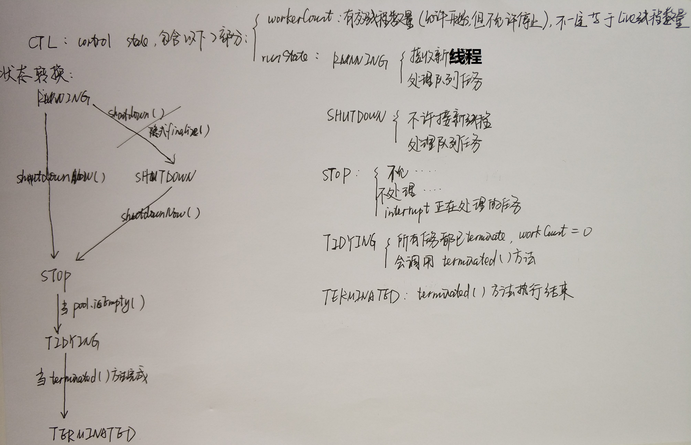

private final AtomicInteger ctl = new AtomicInteger(ctlOf(RUNNING, 0));
//高3位用来标识runState，其余位表示workerCount,Integer.SIZE=32,为了简化示例，用8位举例
private static final int COUNT_BITS = Integer.SIZE - 3;//8-3=5
private static final int CAPACITY = (1 << COUNT_BITS) - 1;//1<<5-1=000_11111=31,workerCount最大31个
// runState is stored in the high-order bits
//状态的值采用的是有符号数表示，计算机采用补码的方式参与运算(将减法统一为加法)；
//正数：补码=原码，反码=原码
//负数：反码=符号位不变，其他按位取反；补码=符号位不变，其他按位取反，+1
private static final int RUNNING = -1 << COUNT_BITS;//-1原码1000_0001,补码1111_1111,<<5=111_00000
private static final int SHUTDOWN = 0 << COUNT_BITS;//0原码=补码0000_0000,<<5=000_00000
private static final int STOP = 1 << COUNT_BITS;//1原码=补码0000_0001,<<5=001_00000
private static final int TIDYING = 2 << COUNT_BITS;//2原码=补码0000_0010,<<5=010_00000
private static final int TERMINATED = 3 << COUNT_BITS;//3原码=补码0000_0011,<<5=011_00000
// Packing and unpacking ctl,这里的c指的是ctl.get(),ctl类型是AtomicInteger
//假设当前有3个线程，线程池处于RUNNING状态,那么ctl为111_00011,111_00011 & ~000_11111 = 111_00011 & 111_00000 = 111_00000
private static int runStateOf(int c) { return c & ~CAPACITY; }//排除低位影响，获取高位状态
//假设当前有3个线程，线程池处于RUNNING状态,那么ctl为111_00011,111_00011 & 000_11111 = 000_00011
private static int workerCountOf(int c) { return c & CAPACITY; }//排除高位影响，获取低位数量
//线程池Worker
private final HashSet workers = new HashSet();
//阻塞任务队列
private final BlockingQueue workQueue;

public void execute(Runnable command) {
if (command == null)
throw new NullPointerException();
int c = ctl.get();
if (workerCountOf(c) < corePoolSize) {//如果运行的线程数小于corePoolSize
if (addWorker(command, true))//添加一个新线程到核心线程池
return;
c = ctl.get();
}
if (isRunning(c) && workQueue.offer(command)) {//如果线程池在运行态并且运行的线程数大等于corePoolSize,并且新任务入队列成功
int recheck = ctl.get();//recheck线程池是否正在运行
if (! isRunning(recheck) && remove(command))//如果线程池不处于运行状态，由于之前已经入队列，这里需要从workQueue中移除任务
reject(command);//异常策略处理
else if (workerCountOf(recheck) == 0)//线程池数量为0，回到初始化状态(RUNNING状态并且线程数量为0)
//创建一个线程，但并没有传入任务，因为之前任务已经被添加到workQueue中了，所以worker在执行的时候，会直接从workQueue中获取任务。
//所以，在workerCountOf(recheck) == 0时执行addWorker(null, false);也是为了保证线程池在RUNNING状态下必须要有一个线程来执行任务
addWorker(null, false);
}
/*线程池不是RUNNING状态，队列满或者不满：添加任务失败，处理异常
*线程池是RUNNING状态，队列已满：添加一个新线程到非核心线程池
*/
else if (!addWorker(command, false))//添加一个新线程到非核心线程池，如果失败，处理异常
reject(command);
}
private boolean addWorker(Runnable firstTask, boolean core) {//如果core=true，使用corePoolSize所谓边界,否则使用maximumPoolSize
retry:
for (;;) {
int c = ctl.get();
int rs = runStateOf(c);
// Check if queue empty only if necessary.
//rs > SHUTDOWN时，不再接收新任务并且不处理正在执行的任务时返回false;
//rs == SHUTDOWN时（不再接收新线程），如果firstTask!=null,不再接受任务，返回false;
//rs == SHUTDOWN时（不再接收新线程），如果workQueue为空,没有任务了，不需要添加线程，返回false;
if (rs >= SHUTDOWN &&
! (rs == SHUTDOWN &&
firstTask == null &&
! workQueue.isEmpty()))
return false;
for (;;) {
int wc = workerCountOf(c);
if (wc >= CAPACITY ||
wc >= (core ? corePoolSize : maximumPoolSize))
return false;
if (compareAndIncrementWorkerCount(c))
break retry;
c = ctl.get(); // Re-read ctl
if (runStateOf(c) != rs) // 如果当前的运行状态不等于rs，说明状态已被改变，返回第一个for循环继续执行
continue retry;
// else CAS failed due to workerCount change; retry inner loop
}
}
boolean workerStarted = false;
boolean workerAdded = false;
Worker w = null;
try {
w = new Worker(firstTask);
final Thread t = w.thread;
if (t != null) {
final ReentrantLock mainLock = this.mainLock;
mainLock.lock();
try {
// Recheck while holding lock.
// Back out on ThreadFactory failure or if
// shut down before lock acquired.
int rs = runStateOf(ctl.get());
if (rs < SHUTDOWN ||//表示是RUNNING状态，添加线程
(rs == SHUTDOWN && firstTask == null)) {//？？？？？在SHUTDOWN时不会添加线程，但还是会执行workQueue中的任务
if (t.isAlive()) // precheck that t is startable
throw new IllegalThreadStateException();
workers.add(w);
int s = workers.size();
// largestPoolSize记录着线程池中出现过的最大线程数量
if (s > largestPoolSize)
largestPoolSize = s;
workerAdded = true;
}
} finally {
mainLock.unlock();
}
if (workerAdded) {
t.start();
workerStarted = true;
}
}
} finally {
if (! workerStarted)
addWorkerFailed(w);
}
return workerStarted;
}
如果task为空，则通过getTask从阻塞队列中取任务来执行; finally块中会执行processWorkerExit(Worker, boolean)方法;
如果设置allowCoreThreadTimeOut =true，允许核心线程超时，需要判断获取任务是否超时，前提是大于corePoolSize；
如果allowCoreThreadTimeOut =false，那么如果队列为空的情况下，take方法会阻塞直到队列不为空
Runnable r = timed ?
workQueue.poll(keepAliveTime, TimeUnit.NANOSECONDS) :
workQueue.take();